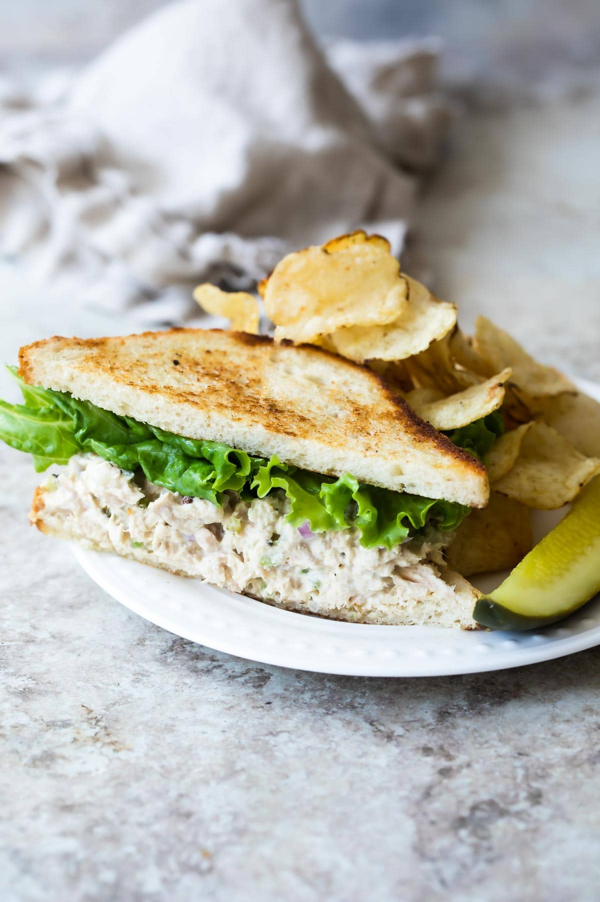

Tuna Sandwich

Description
I never get tired of an excellent tuna salad recipe, and of the hundreds of versions I’ve made, this version is the best. Serve on toast, crackers, a bed of greens, or grilled as a very delicious tuna melt.
No matter how you mix it, making tuna salad at home is one of the easiest, most satisfying meals you can whip up from pantry ingredients
Ingredients
- 4 (5 ounce) cans tuna packed in water drained (see note 1)
- 1 cup mayonnaise or less to taste (see note 2)
- 1/3 cup celery finely chopped (about 1 rib)
- 2 tablespoons red onion minced, about 2 small slices
- 2 tablespoon sweet pickle relish (see note 3)
- 1 tablespoon fresh lemon juice
- 1 clove garlic minced
- salt and freshly ground black pepper
Instructions
- In a medium bowl, combine tuna, mayonnaise, celery, onion, relish, lemon juice, and garlic.
- Season to taste with salt and pepper. Serve immediately or cover and chill until serving.